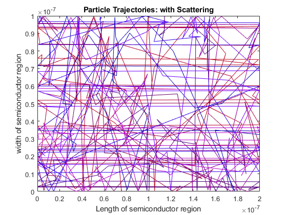
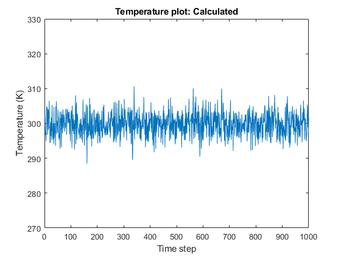
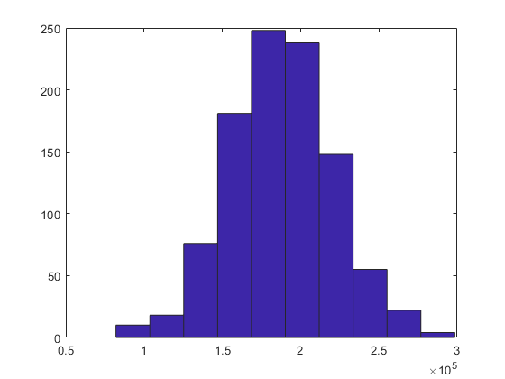

Contents
clearvars
clearvars -GLOBAL
close all
global C
global X Y
C.q_0 = 1.60217653e-19;
C.hb = 1.054571596e-34;
C.h = C.hb * 2 * pi;
C.m_0 = 9.10938215e-31;
C.kb = 1.3806504e-23;
C.eps_0 = 8.854187817e-12;
C.mu_0 = 1.2566370614e-6;
C.c = 299792458;
C.g = 9.80665;
mn = 0.26*C.m_0;
Temp = 300;
runTime = 10000;
Tmn = 0.2e-12;
sizeX = 200e-9;
sizeY = 100e-9;
Modeling the electrons in the silicon as particles with the effective %
Thermal Velocity %%%%%%%%%%%%%%%%%%%%%%%%%%%%%%%%%%%%%%%%%%%%%%%%%%%%%%
Thermal velocity is the velocity that a particle in a system %%%%%%%%%%
would have if its kinetic energy were equal to the average energy %%%%%
of all the particles of the system. %%%%%%%%%%%%%%%%%%%%%%%%%%%%%%%%%%%
Vth = sqrt(2*C.kb*Temp/mn);
size = 1000;
dispSize = 10;
X = rand(2,size);
Y = rand(2,size);
Pos_X(1,:)= X(1,:)*sizeX;
Pos_Y(1,:)= Y(1,:)*sizeY;
colour = rand(1,dispSize);
angle(1,:) = X(2,:)*2*pi;
sigma = sqrt(C.kb*Temp/mn)/4;
mu = Vth;
MB_dist = makedist('Normal',mu,sigma);
Vel = random(MB_dist,1,size);
Vel_X(1,:) = Vel(1,:).* cos(angle(1,:));
Vel_Y(1,:) = Vel(1,:).* sin(angle(1,:));
Vel_sum = sum(Vel)/size;
spacStep = 0.01*sizeY;
dt = spacStep/Vth;
steps = 1000;
Vel_X(1,:) = Vel_X(1,:)*dt;
Vel_Y(1,:) = Vel_Y(1,:)*dt;
Publishing Documents with MATLAB
Part 2
Pscat = 1 - exp(-(dt/Tmn));
MFP_count = zeros(1,size);
calcTemp = zeros(1,size);
for i = 1:1:steps
Scat = rand(1,size);
ScatCheck = (Scat <= Pscat);
angle(ScatCheck) = rand*2*pi;
Vel = random(MB_dist,1,size);
Vel_X(ScatCheck) = Vel(ScatCheck).*cos(angle(ScatCheck)).*dt;
Vel_Y(ScatCheck) = Vel(ScatCheck).*sin(angle(ScatCheck)).*dt;
MFP_count(~ScatCheck) = MFP_count(~ScatCheck)+ spacStep;
MFP_count(ScatCheck) = 0;
CheckRHSPos_X = Pos_X + Vel_X > 2e-7;
Pos_X(CheckRHSPos_X) = Pos_X(CheckRHSPos_X)+ Vel_X(CheckRHSPos_X)- sizeX;
CheckLHSPos_X = Pos_X + Vel_X < 0;
Pos_X(CheckLHSPos_X) = Pos_X(CheckLHSPos_X) + Vel_X(CheckLHSPos_X)+ sizeX;
leftover = ~(CheckRHSPos_X | CheckLHSPos_X);
Pos_X(leftover) = Pos_X(leftover) + Vel_X(leftover);
checkPos_Y = (Pos_Y + Vel_Y >1e-7 | Pos_Y + Vel_Y < 0);
Vel_Y(checkPos_Y) = Vel_Y(checkPos_Y).*(-1);
Pos_Y(1,:) = Pos_Y(1,:)+ Vel_Y(1,:);
mean_Vel = sum(Vel)/size;
calcTemp(1,i) = mn*(mean_Vel)^2/(2*C.kb);
MFP = sum(MFP_count)/size;
Tmn_avg = MFP/mean_Vel;
prev_Pos_X(i,:) = Pos_X(1,:);
prev_Pos_Y(i,:) = Pos_Y(1,:);
end
figure(3)
for j = 1:1:dispSize
plot(prev_Pos_X(:,j),prev_Pos_Y(:,j),'color',[colour(1,j) 0 j/dispSize])
title('Particle Trajectories: with Scattering')
xlabel ('Length of semiconductor region')
ylabel ('width of semiconductor region')
xlim([0 sizeX])
ylim([0 sizeY])
drawnow
hold on
end
figure(4)
plot(linspace(1,size,size),calcTemp);
title('Temperature plot: Calculated')
xlabel('Time step')
ylabel('Temperature (K)')
ylim([270 330])
figure(5)
title('Velocity Histogram')
hist(Vel)
display('The Mean Free Path (MFP) of electrons using an exponential scattering probability and found to be')
display(MFP)
display('The Mean Time Between Collisions is is found to be ')
display(Tmn_avg)
The Mean Free Path (MFP) of electrons using an exponential scattering probability and found to be
MFP =
3.5142e-08
The Mean Time Between Collisions is is found to be
Tmn_avg =
1.8741e-13
  